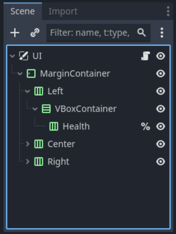
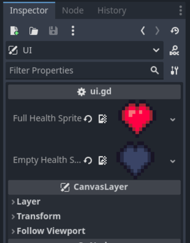

IMPORTANT! This module requires the Hazard Setup, Global Script and UI modules to be completed first!
A commonplace in many games, sometimes you want the player to be able to make mistakes without being reset completely. We can achieve this by giving the player character health, a visual of how many mistakes they can make before they get reset. In this page we will add health to our player and have it show up on th UI.
First things first, we need to set our player script to have a class name so that we can access it from our global script. At the very top of the player script (above the extends CharacterBody2D) we will add class_name Player.
class_name Player
extends CharacterBody2DNext, moving over to our global script we will add a new variable called player with the required type Player like so:
var player : PlayerFinally, back in our player script we will set the global script's player variable to the player in the _ready function.
func _ready():
respawn_point = position
Global.player = selfContinuing on in the player script we will need to add two new variables: max_health and current_health. Let's set max_health to be an export variable in player stats and have a default value of 3. The current_health variable will be in reference variables and have a default value of max_health (as we want the player to start at max health.)
# Player Stats
@export var speed = 100.0
@export var acceleration = 800.0
@export var friction = 1200.0
@export var jump_velocity = -300.0
@export var gravity_scale = 1.0
@export var terminal_velocity = 500.0
@export var max_health = 4# Reference Variables
var gravity = ProjectSettings.get_setting("physics/2d/default_gravity")
@onready var sprite = $AnimatedSprite2D
var respawn_point = Vector2.ZERO
var current_health = max_healthTo actually use these variables we will need to add a new function called damage. In it we want to first reduce the player's current health by 1, then if the player's health is 0, run our die function.
func damage():
current_health -= 1
if current_health <= 0:
die()As for our die function, we need to add an extra line of code that resets the player's health (or else they would respawn with no health!)
func die():
position = respawn_point
current_health = max_healthAdditionally, we need to set the _on_hazard_collider_body_entered and _on_hazard_collider_area_entered functions to call the damage function instead of the die function.
func _on_hazard_collider_body_entered(_body):
call_deferred("damage")
func _on_hazard_collider_area_entered(_area):
call_deferred("damage")Let's import the health sprites. You need both the full and empty heart sprites from the Health folder in your VGDC-2024 Assets folder.
If you are not taking this course in person, you can download the assets Here
Next navigate to your UI scene. Right click the Left node and create a new VBoxContainer as a child node (if you already have one from a previous module you can use that.) Right click the VBoxContainer node and create a new HBoxContainer node. Rename it Health and set it to be accessed by a unique name.
Next open up the UI script. At the top add 2 new export variables: full_heart_sprite and empty_health_sprite. Set both to require Texture2Ds, but leave their values blank like so:
@export var full_health_sprite : Texture2D
@export var empty_health_sprite : Texture2DNext, select the UI node. In the inspector you should see the new variables. Drag the correct sprites from the file system into the inspector to assign them.
Back in the UI script, add the _ready function to the script if you don't have it already. Here we will initialize the health node with TextureRect nodes to represent the player's health. We do this by creating a number of new TextureRect nodes equal to the player's maximum health and assigning them to the Health node as children. The script for this is decently complex but we will walk trhough it.
func _ready():
for i in Global.player.max_health:
var heart = TextureRect.new()
heart.texture = full_health_sprite
heart.custom_minimum_size = Vector2(48,48)
%Health.add_child(heart)While the health now appears in the UI and in game, it still doesn't update when the player takes damage. To fix this go into the UI script's _process function. In it we will want to loop through each of the Health node's children and set their texture to be full or empty based on the player's current health. An example on how to do this looks like so:
func _process(_delta):
var hearts = %Health.get_children()
for i in hearts.size():
if i < Global.player.current_health:
hearts[i].texture = full_health_sprite
else:
hearts[i].texture = empty_health_spriteOnce again this code is a bit on the complex side, so let's go line by line again.
And that should now mean the player's health is functional and showing up in the UI! Go ahead and test it out. Though there are still two major issues that we will sort out in the next part.